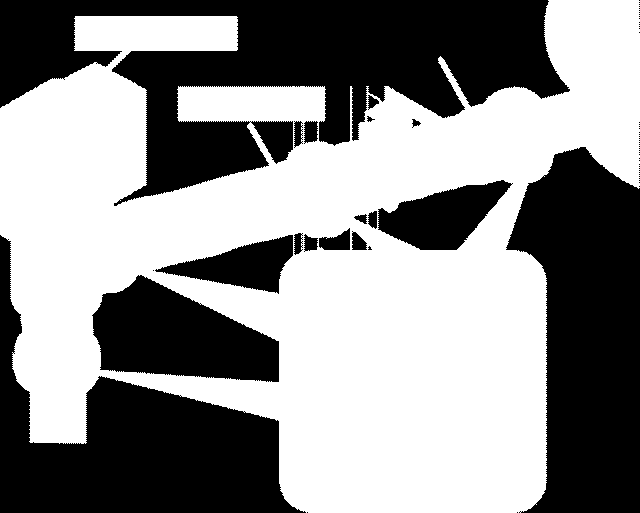
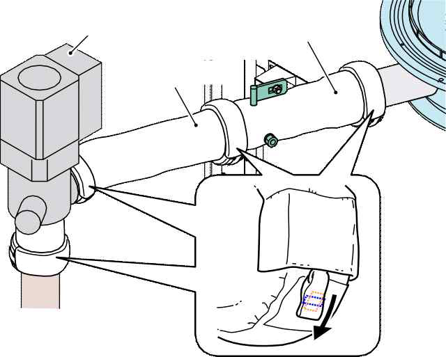
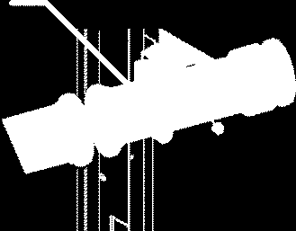
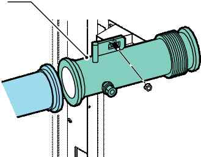
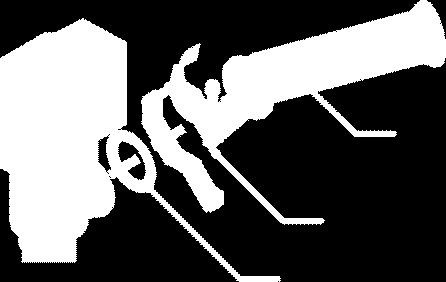
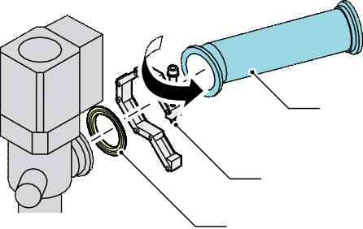
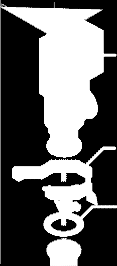
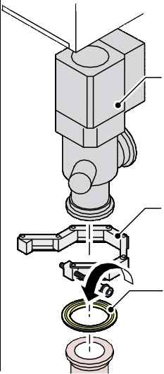

🛠️ 조치 방법 안내 · 부품별
CKD
문서의 “조치 방법” 내용을 보기 좋게 정리한 페이지입니다. 이미지 클릭 시 원본 크기로 열립니다.
필요인원: 1명
필요한 도구:Hexagonal wrenches
Phillips screwdriver
WrenchesNew O-ring
New metal gasket
Tie wraps
Ethanol/deionized (DI) water solution
Cleanroom wipes (nonwoven)
Safety mask
Safety glasses
Safety gloves
유지보수 준비
- 질소를 사용하여 공정 튜브를 퍼지하여 공정 튜브나 진공 라인에 유해 가스가 남지 않도록 합니다.
- 가스 흐름도 패널의 ATM 램프를 사용하여 진공 라인이 대기압으로 돌아갔는지 확인합니다.


- 2 부스터 펌프 및 건식 펌프 버튼의 램프가 꺼져 있는지 확인합니다.
- 모든 가스 공급을 끄려면:
- 1 가스 공급 밸브를 닫으려면 가스 흐름도 패널의 스위치를 누릅니다. 열린 밸브는 불이 켜진 스위치로 표시됩니다.
- 2 위험 가스 라인의 모든 핸드 밸브를 닫습니다.
- 3 위험 가스 밸브를 잠그고 태그를 붙입니다.
- 메인 히터 전원을 끄려면:
- 1 전원을 끌 수 있을 때까지 수동으로 메인 히터 온도를 낮춥니다.
- 2 히터 스위치를 끕니다.
- 히터의 수냉선 손상을 방지하려면 히터 차단기를 끈 후 최소 12시간 동안 냉각수의 흐름을 멈추지 마세요.
- 다음 히터가 실온에 있는지 확인합니다:
- 심한 화상을 방지하려면 유지보수를 하기 전에 히터를 실온으로 식히세요.
- 메인 히터 : WAVES 컨트롤러 온도 상태 화면 또는 EXCORE 미터 릴레이에서 확인합니다.
- 시스템을 완전히 종료합니다.
- 전원 박스 메인 차단기를 잠그고 태그를 붙입니다.
- 진공 라인 커버를 제거합니다.


Standard Specification
Scavenger safety cover
N2 Purge Box Specification
Scavenger cover
Scavenger cover
패널 히터 제거하기
- 패널 히터의 금속 피팅을 느슨하게 합니다.
- 패널 히터를 제거합니다.

Main valve
#1 vacuum pipe
#2 vacuum pipe
- 체인 클램프 주변의 단열재를 제거합니다.
분기 파이프 제거
- 진공 파이프 본체를 렌치로 고정하고 진공 파이프에 부착된 모든 분기 파이프 너트를 두 번째 렌치로 풀어줍니다.
- 너트를 제거하고 진공 파이프에서 분기 파이프를 제거합니다.

#1 vacuum pipe
#2 vacuum pipe
- 분기 파이프 나사에서 금속 가스켓을 제거합니다.
#1 진공 파이프 제거
- 체인 클램프 A를 제거하여 매니폴드와 #1 진공 파이프를 고정합니다.
- 오링 시트를 제거합니다.
- 가스 누출로 인한 부상을 방지하기 위해 O-링 시트를 제거할 때 #1 진공 파이프의 밀봉 표면을 긁지 않도록 주의하세요.
- 체인 클램프 B를 제거하여 #1 진공 파이프와 #2 진공 파이프를 고정합니다.
- 오링 시트를 제거합니다.

- #1 진공 파이프를 고정하는 너트를 제거하고 #1 진공 파이프를 제거합니다.
#2 진공 파이프 제거하기
- #2 진공 파이프를 지지하는 동안 #2 진공 파이프와 메인 밸브를 고정하는 체인 클램프를 제거합니다.
- #2 진공 파이프를 떨어뜨리지 않으려면 작업할 때 손으로 파이프를 지지하세요. 파이프는 나사로 프레임에 고정되지 않습니다. 체인 클램프를 제거하면 파이프를 쉽게 제거할 수 있습니다.
- #2 진공 파이프와 O링 시트를 제거합니다.
- 가스 누출로 인한 부상을 방지하기 위해 O-링 시트를 제거할 때 #2 진공 파이프의 밀봉 표면을 긁지 않도록 주의하세요.
메인 CKD 밸브 제거
부상을 피하려면 두 사람과 함께 다음 작업을 수행하세요.
- 고무 히터 커넥터를 제거합니다.
- 메인 CKD 밸브에 연결된 공기 파이프를 제거합니다.
- 메인 CKD 밸브를 라인 트랩에 부착하는 체인 클램프 D를 제거합니다.
- 오링 시트를 제거합니다.
- 가스 누출로 인한 부상을 방지하기 위해 O링 시트를 제거할 때 메인 CKD 밸브의 밀봉 표면을 긁지 않도록 주의하세요.
- 메인 CKD 밸브를 고정하는 볼트를 제거하고 메인 CKD 밸브를 제거합니다.
- 메인 CKD 밸브를 안전한 곳에 두세요.
- 라인 트랩 제거하기
- 라인 트랩을 고정하는 너트를 제거합니다.
- 라인 트랩을 #3 진공 파이프에 부착하는 체인 클램프 E를 제거합니다.
- 오링 시트를 제거합니다.

- 라인 트랩의 하단을 사용자 쪽으로 기울입니다.




Line trap
1
2
- 라인 트랩을 당신 쪽으로 당겨서 아래로 내리세요.
#3 진공 파이프 제거
- 체인 클램프 F를 제거하여 #3 진공 파이프와 서브 팹 라인을 고정합니다.
- #3 진공 파이프를 제거합니다.
- 오링 시트를 제거합니다.
- 가스 누출로 인한 부상을 방지하기 위해 O-링 시트를 제거할 때 #3 진공 파이프의 밀봉 표면을 긁지 않도록 주의하세요.
라인 트랩 설치
- 새 오링을 준비합니다.
- 에탄올/DI 수용액으로 O링 시트를 청소합니다.
- 새 오링을 오링 시트에 놓습니다.
- 에탄올/DI 수용액을 사용하여 라인 트랩 플랜지, 메인 밸브 플랜지 및 #3 진공 파이프 플랜지의 밀봉 표면을 청소합니다.
- 라인 트랩을 설치하려면:
- 1 라인 트랩 플랜지와 #3 진공 파이프 플랜지의 밀봉 표면에 O-링 시트를 설정합니다.
- 2 다음 그림과 같이 #3 진공 파이프에 라인 트랩을 설치합니다.
- 3 라인 트랩 플랜지와 메인 밸브 플랜지의 밀봉 표면에 O-링 시트를 설정합니다.
- 체인 클램프를 조여 라인 트랩을 #3 진공 파이프와 메인 밸브를 라인 트랩에 연결합니다.
- 너트를 조여 라인 트랩을 고정합니다.

Chain
Line trap
Chain
- 진공 라인 커버를 설치합니다.
- 메인 차단기에서 잠금 장치와 태그아웃 장치를 제거합니다.
- 시스템을 재시작합니다.
- 누출 점검을 통해 가스 누출이 없는지 확인합니다.
- 가스 누출이 없는지 확인한 후, 위험 가스 라인의 핸드 밸브에서 잠금 장치와 태그아웃 장치를 제거합니다.